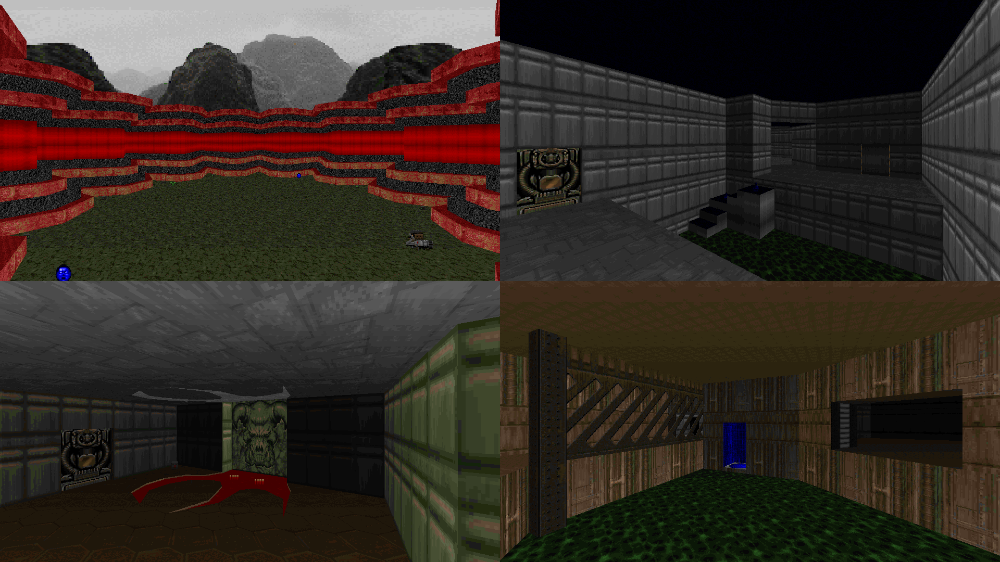

DOWNLOAD LINKS



| Year | 2022 |
| IWAD | Ultimate Doom |
| Source port | None |
| Game mode(s) | Single-player |
| Map(s) | E1M1-9 |
Perfunction is a vanilla-compatible episode replacement for (Ultimate) Doom that I made in a single day. I streamed the mapping process for all 9 maps in a 6-hour stream on my Twitch channel. The maps kick off in fairly relaxed territory gameplay-wise but ramp up in difficulty towards the end, with the last two leaning towards gimmicky but staying within a reasonable threshold.